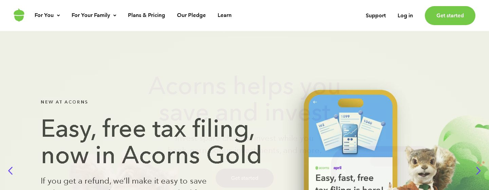

Acorns Review 2026: The Fee Math Nobody Shows You
Acorns is worth it if saving doesn't come naturally to you and you'll use more than just round-ups. The automation genuinely builds the habit, and the IRA match can pay for the subscription by itself. But on a small balance with round-ups only, the flat monthly fee quietly eats your returns — and that's the part most reviews bury.

What Acorns Actually Is
Acorns is a micro-investing app that rounds up your card purchases to the next dollar and invests the spare change into a pre-built ETF portfolio. Buy a coffee for $4.30, and $0.70 gets set aside. It sounds too small to matter — and alone, it is. Typical users accumulate a few hundred dollars a year in round-ups. The real value is psychological: money leaves in amounts you never feel, so people who "can't invest" end up invested.
Since launching in 2014, it's grown past 10 million users and expanded into retirement accounts (IRAs), checking, emergency savings, kids' accounts, and cash-back rewards. You don't pick stocks — Acorns assigns you one of five portfolios based on a short questionnaire, built mostly from low-cost iShares and Vanguard ETFs.
Acorns Pricing in 2026
Heads up if you've read older reviews: the old Personal / Personal Plus / Premium tier names are gone. The current lineup is Bronze, Silver, and Gold — and there is no free tier.
| Tier | Price | What you actually get |
|---|---|---|
| Bronze | $3/mo | Investment account, round-ups, IRA (Traditional/Roth/SEP), basic checking, cash-back partners |
| Silver | $6/mo | Everything in Bronze + emergency savings at ~3.35% APY, higher-yield checking, 1% IRA match (first year) |
| Gold | $12/mo | Everything in Silver + 3% IRA match (first year), kids' custodial accounts with 1% match, limited DIY stock trading |
The fee trap on small balances
This is the part that decides whether Acorns is smart or expensive for you. $3/month sounds like nothing — but fees should be judged as a percentage of your money:
| Your balance | Bronze fee/year | Effective fee rate |
|---|---|---|
| $500 | $36 | 7.2%/yr — likely wipes out gains |
| $2,000 | $36 | 1.8%/yr — still steep |
| $10,000 | $36 | 0.36%/yr — fine, competitive |
For comparison, typical robo-advisors charge 0.25% of assets. So Acorns is expensive when you're small and cheap when you're big — the exact opposite of what a beginner needs, unless the automation is genuinely what gets you to save at all. That behavioral piece is the entire bet.
The IRA Match: The Best Reason to Pay Up
The most underrated feature. During your first year on a tier, Acorns matches new IRA contributions — 1% on Silver, 3% on Gold. Contribute $7,000 to a Roth IRA on Gold in year one and Acorns adds $210. That's more than a year of Gold fees ($144) handed back to you.
The catch: matched funds must stay invested for four years. Pull out early and the match is forfeited. And the match only applies to your first year on the tier, so the value fades after year one — plan accordingly.
Try Acorns
Best for people who need saving to happen automatically.
Start investing with Acorns →affiliate link · no extra cost to you
Pros and Cons
Where it earns the fee
- Round-ups build the habit with zero willpower
- IRA match (1–3%) is rare among robo-advisors
- Low-cost ETF portfolios, auto-rebalanced
- Emergency savings at a competitive ~3.35% APY (Silver+)
- Everything — invest, retire, bank — in one app
Where it costs you
- Flat fee is brutal on balances under ~$1,000
- No free tier at all
- No individual stocks (except limited Gold DIY)
- No tax-loss harvesting
- $50/ETF fee to transfer out
- No human advisor access on any tier
Who Should Use Acorns — and Who Shouldn't
Get it if:
You've tried to save manually and it never sticks. You want investing to happen without decisions. You'll fund an IRA and can grab the match. You'd rather have one app than five.
Skip it if:
Your balance will stay tiny and you only plan to invest round-ups — the fee math works against you. You want to pick your own stocks or ETFs. You're fee-sensitive and disciplined enough to auto-transfer into a no-subscription broker like Fidelity or SoFi Invest yourself; the same automation is free if you'll actually set it up.
FAQ
Is Acorns worth it in 2026?
Is Acorns safe?
How much can round-ups actually make?
Can I lose money on Acorns?
Verdict: 3.9/5 — good habit machine, watch the fee math
If the automation is what finally gets you investing, it's worth $3.
Try Acorns →affiliate link · no extra cost to you